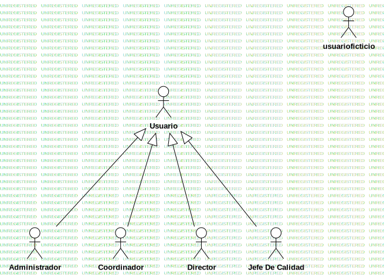
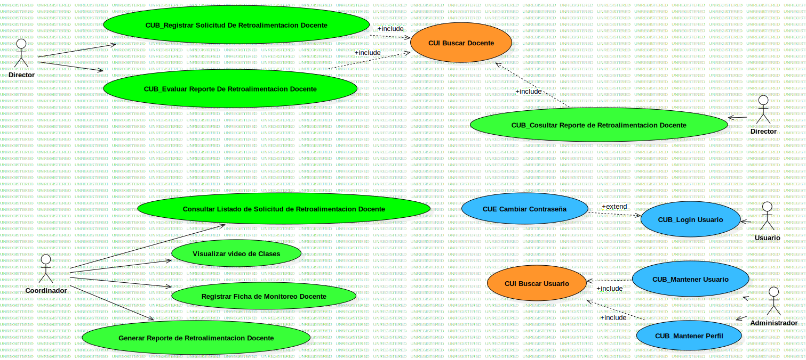

3. MCU (MCUS)
UMLModel
Untitled
::
3. MCU (MCUS)
Description
none
Diagrams

Diagrama de Actores

DGCU
Properties
Name
Value
name
3. MCU (MCUS)
stereotype
null
visibility
public
importedElements
viewpoint
Owned Elements
Diagrama de Actores
Usuario
Administrador
Coordinador
Director
Jefe De Calidad
DGCU
CUB_Registrar Solicitud De Retroalimentacion Docente
CUI Buscar Docente
CUB_Cosultar Reporte de Retroalimentacion Docente
Consultar Listado de Solicitud de Retroalimentacion Docente
Visualizar video de Clases
Registrar Ficha de Monitoreo Docente
Generar Reporte de Retroalimentacion Docente
CUB_Login Usuario
CUE Cambiar Contraseña
CUB_Mantener Usuario
CUB_Mantener Perfil
CUI Buscar Usuario
CUB_Evaluar Reporte De Retroalimentacion Docente